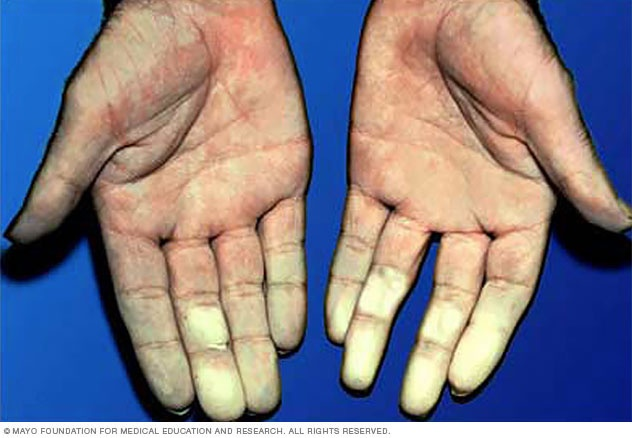

Raynaud’s Disease

SYMPTOMS:
- Cold fingers and toes
-
Your skin might turn white or blue when it’s cold or when you’re stressed. As you warm up, it could turn red.
-
Your fingers and toes feel tingly or prickly when they start to warm up.
CAUSES:
- Connective Issue Disease
-
Artery Disease
-
Carpal tunnel syndrome
-
Repetitive action or vibration
-
Smoking
-
Injuries
-
Certain Medications